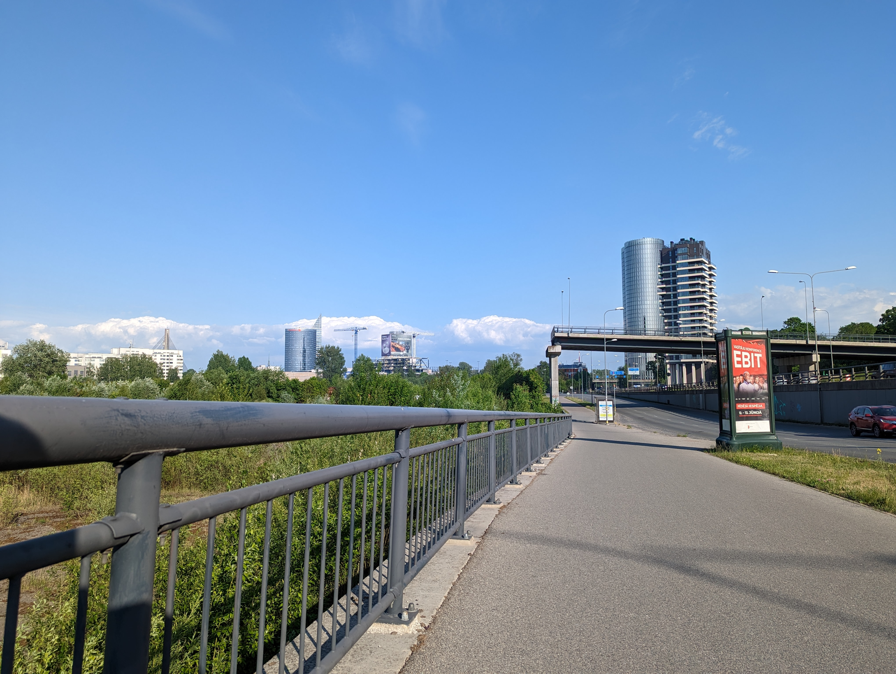
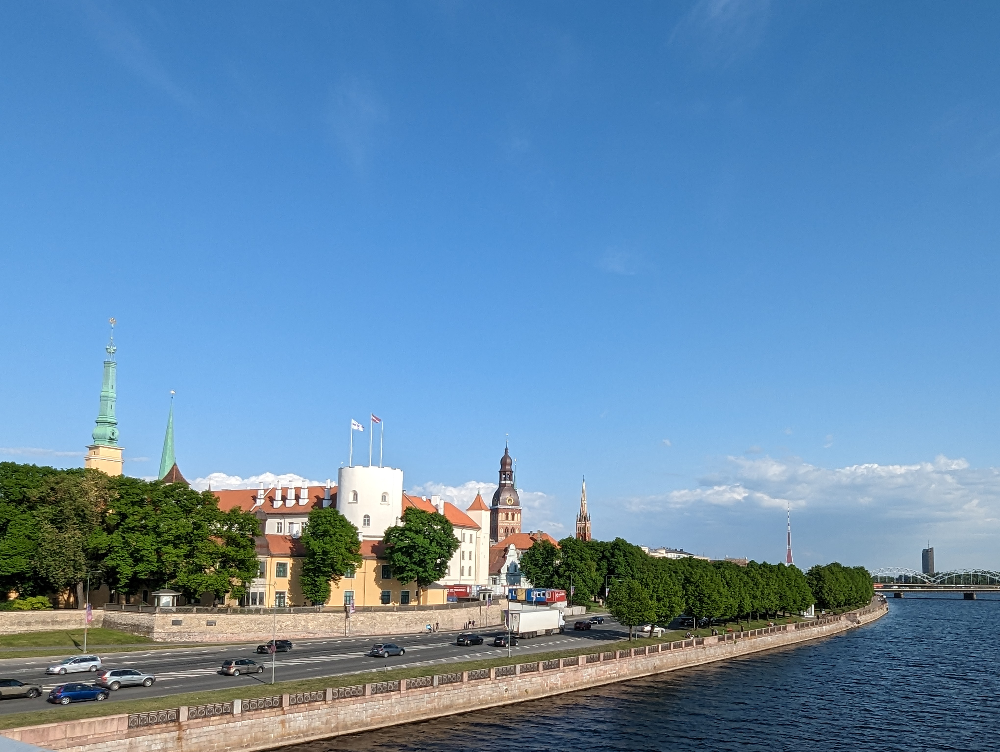
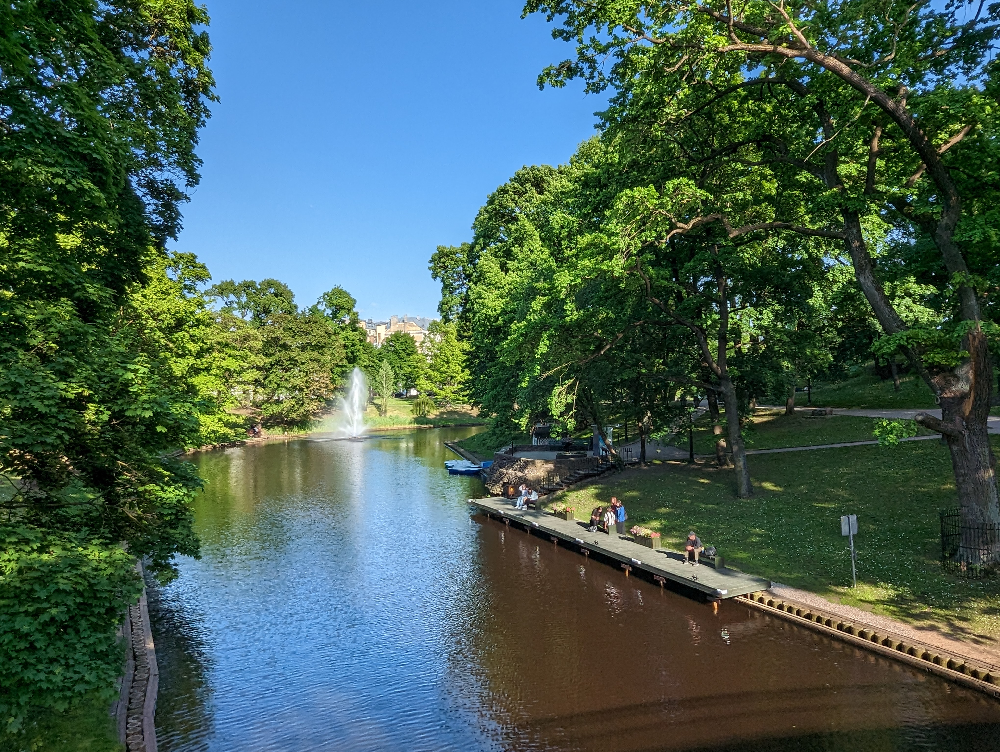

Tilts uz nekurieni
Mans ceļš sākas ar "Tiltu uz nekurieni", kas kļuvis par ievērojamu simbolu Rīgas infrastruktūras izaugsmei. Šī vieta ir kļuvusi par populāru apskates objektu, ne tikai instragrameru un tiktokeru vidū, bet arī vietējo iedzīvotāju starpā. Lai gan vēl neesmu kāpis uz šī monumenta, ikdienā braucot garām, es nevaru nepamosties no intereses, ko tas rada. Skatoties uz to, ir jūtama lepnuma sajūta, redzot, kā mūsu pilsēta attīstās un aug. Tomēr vienlaikus tā liek man izjust arī bēdīgumu, jo iebraucu kārtejā bedrē, kas varēja tikt aizlāpīta, izmantojot līdzekļus, kas tika ieguldīti šī tilta būvē. Tādējādi tas kļūst gan par skaistumu, gan arī atgādinājumu par neizpildītajiem infrastruktūras uzlabošanas plāniem.

Vanšu tilts
Šī vieta man visvairāk asociējas ar skaisto skatu pār Daugavu. Katru rītu, neatkarīgi vai braucu ar velosipēdu vai ar auto, iebraucu tajā pašā bedrē, kas netiek salabota jau gadiem ilgi. Lai gan augšupcelšanās virs Daugavas ir patīkams, nedaudz skatu traucē "īslaicīgās" barjeras uz gājēju celiņa. Taču, pievēršoties vējainajam vējam, kas pūš un atgādina par spēcīgiem jūras viļņiem, rodas savdabīga un dzīva sajūta. Šis kontrasts starp aizraujošo skatu un infrastruktūras trūkumiem piešķir šai vietai daudzveidīgu raksturu. Tas ir aicinājums pārdomāt un uzlabot tiltu, nodrošinot drošu un gludu ceļu pāri Daugavai, lai pilnībā izbaudītu šo ikdienas pieredzi. Tiltā varētu iekļaut arī vides elementus, piemēram, ziedu dobes un sēdvietas, kas veicinātu brīvā laika pavadīšanu un piesaistītu vairāk cilvēkus. Tādējādi šī vieta kļūtu par patīkamu un pievilcīgu atpūtas vietu gan vietējiem iedzīvotājiem, gan tūristiem. Ideālā gadījumā, tiltā būtu arī speciālas zaļās enerģijas ražošanas sistēmas, kas veicinātu videi draudzīgu enerģijas izmantošanu un palīdzētu samazināt CO2 emisijas. Tādējādi, ievērojami uzlabojot infrastruktūru, mēs varētu padarīt šo vietu vēl pievilcīgāku un saskaņotāku ar dabas aizsardzības principiem.

Rīgas pils

Šo vietu ikdienā aplūkoju braucot pāri Vanšu tiltam. Ir patīkami redzēt, cik sakopta ir tās teritorija, taču tajā pat laikā, ārpus tās, ir diezgan piesārņots ar Vecrīgas tusētaju atkritumiem. Katru darba dienas rītu var nolūkoties uz cilvēkiem, kas sēž ar saviem auto sastrēgumos un triec tos kārtējās bedrēs. Tas liek apdomāt, vai ir citi transporta veidi, kas būtu videi draudzīgāki un mazinātu satiksmes intensitāti šajā vietā. Vienlaikus, skatoties uz Daugavas virsu, var vērot dažādus ūdens kuģus, kas pārvietojas pa upi, sniedzot vēl vienu dimensiju šai ainavai. Tas rada iespēju izmantot Daugavu ne tikai kā transporta ceļu, bet arī kā tūrisma un atpūtas resursu. Varbūt šī vieta varētu kļūt par iecienītu maršrutu velosipēdu braucējiem, kur viņi varētu baudīt gan skaisto skatu, gan aktīvi pavadīt laiku dabā.
Bastejkalna parks

Manuprāt, vispatīkamākā vieta Rīgā ir salīdzinoši kluss un mierīgs, izņemot skaļos BMW, kas triecas uz priekšu ar saviem "taisnajiem izpūtējiem". Ir ļoti jauki redzēt, kad kāds ved savu suni pastaigā vai arī kāds cits brīvdabā saulainā laikā lasa grāmatu. Šī vieta vienmēr asociējas ar Latvijas Universitātes klātbūtni, kur mūs visus vienmēr gaida smaidīgi pasniedzēji. No rīta ir dzirdams studentu sastrēgums, kad viņi steidzas uz lekcijām, bet pēcpusdienā šī vieta kļūst mierīga un aicinājumu izbaudīt pilsētas atmosfēru kopā ar citiem iedzīvotājiem. Šajā vietā var just Rīgas vēju, kas plūst cauri cilvēku dzīvei un kultūras daudzveidībai. Tas ir kā mikrokosmoss, kur satiekas dažādas pasaules - studenti, iedzīvotāji, tūristi. Tā ir vieta, kur ikviens var justies daļa no lielās pilsētas sarūpētās prieka, būdams vienkārši klusums, kas mājo starp visiem skaļajiem un ātrajiem brīžiem.
Brīvības piemineklis

Brīvības piemineklis ir ļoti jauka vieta. Tā vienmēr liek atcerēties Latvijas brīvības cīnītājus. Ir svarīgi šo vietu kopt, uzturēt un neļaut nevienam svešajam to no mums atņemt! Uzskatu, ka Kārļa Zāles projekts "Mirdzi kā zvaigzne!" ir ļoti izdevies un ikvienam latvietim, tūristam vai kādam citam, šī vieta liek acīm mirdzēt. Piemineklis ir ne tikai simbolisks, bet arī vizuāli aizraujošs, it kā zvaigznes rotātu Latvijas gaisu. Tā smalkais detaļu darbs un skaistums piešķir vietai īpašu gaisotni. Šeit, ap stāvlaukumu, var justies svinīgi un lepni par Latvijas vēsturi un brīvību. Tas ir kā tāds latvietības spogulis, kas atgādina mūs par cieņu, godu un neatkarību. Pieņemu, ka daudzi ierodas šeit, lai atskatītos uz pieminekli ar lepnumu un dziļu pateicību tiem, kas cīnījās par mūsu valsti.
Latvijas universitāte

Un te nu mēs esam - Latvijas Universitātē. Šī ir vieta, kur jaunieši un ikviens, kas vēlas izglītoties un augt personībā, kāpj pa savām karjeras kāpnēm. Ir patīkami satikt gan iedvesmojošus pasniedzējus, kas dedzīgi dalās savās zināšanās, gan arī saskarties ar dažādām perspektīvām un talantīgiem kolēģiem. Latvijas Universitāte man asociējas ar dziļu domu apmaiņu, kritisku prātu, kas vairo idejas, kā arī dziļu iedziļināšanos lietu pētīšanā un zināšanu apgūšanā. Ierodoties šeit, galvenais ir neaizmirst izmantot tikai sānējās kāpnes pie galvenajām durvīm, sliktākajā gadījumā - jāizmanto logs, kā simbolisks ceļš uz gudrību un atklāsmēm. Protams, ne vienmēr ir tik labi kā izklausās, reizēm šeit ir auksti, logi pūš, bet tieši tāpēc mēs cenšamies pārvarēt šķēršļus un doties pretī zināšanu un izaugsmes iespējām. Tāpēc, bez šaubām, Latvijas Universitāte ir daļa no mums, kas ik dienas mūs papildina ar jaunām atziņām un veicina mūsu personīgo attīstību.